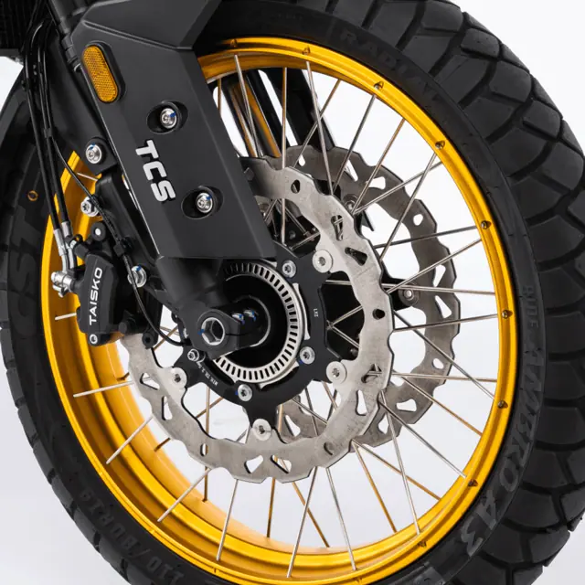
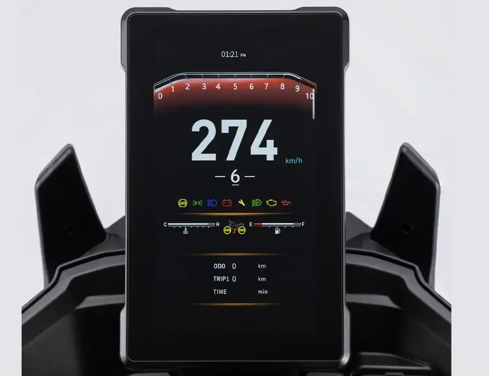
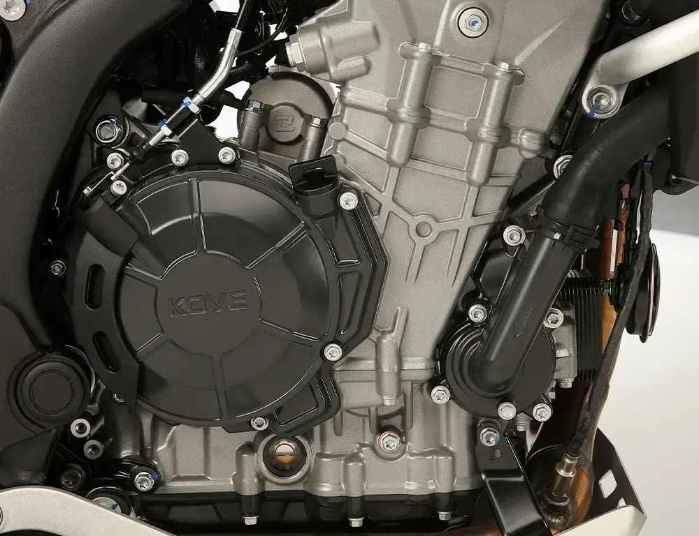
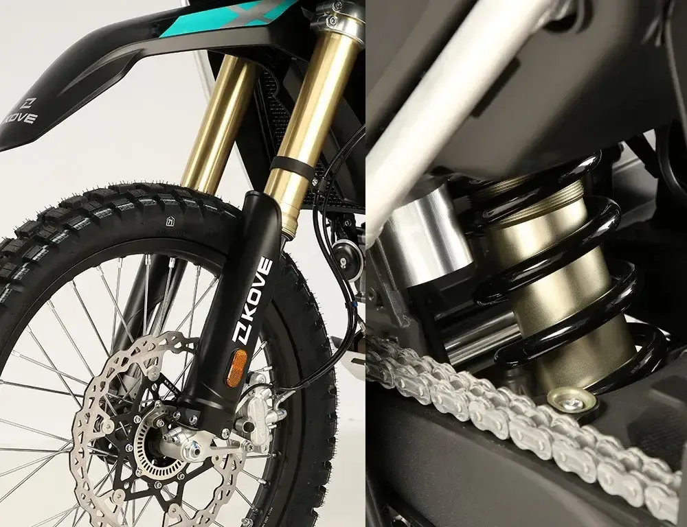
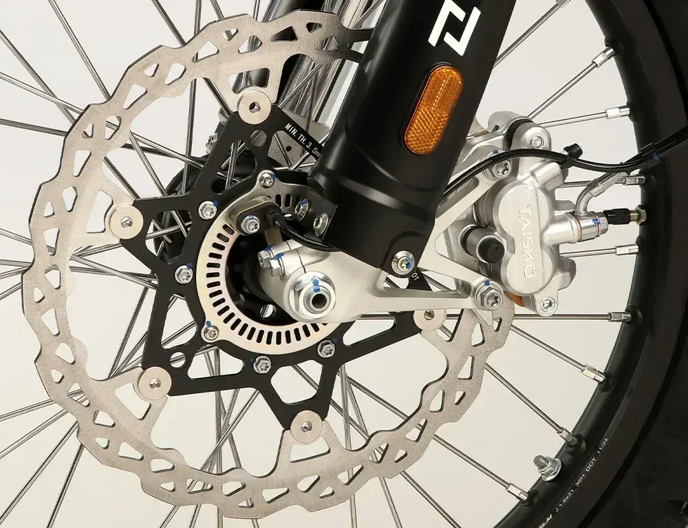
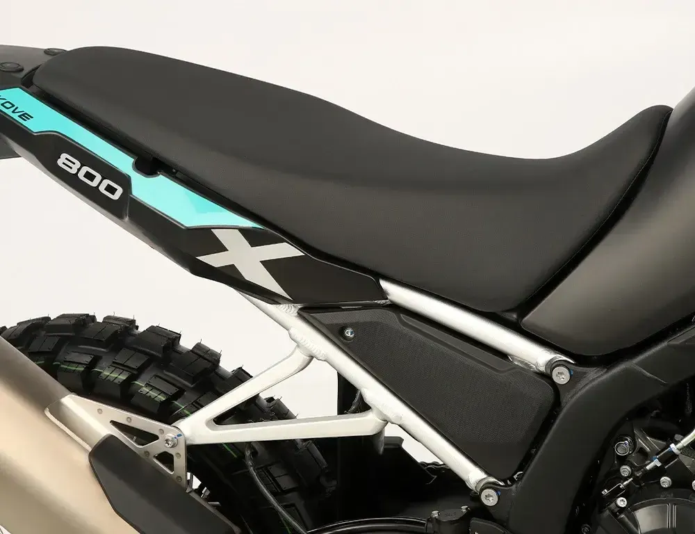

Kove
800X GT 2026
? 800 cc · Adventure
Propuesta de OpsPilot para Expomoto Córdoba, en revisión. No es la web oficial: expomotocordoba.es
Inicio › Motos › Kove › 800X RALLY 2026

Kove
Tijas mecanizadas en aluminio de alta resistencia
Precio y financiación: te los damos al momento por teléfono (pendientes de publicar en la web).




Optimizadas para proporcionar mayor rigidez estructural, precisión en el ajuste y estabilidad dinámica, garantizando un rendimiento superior en condiciones de uso intensivo.
Ruedas optimizadas para off-road: Neumáticos CST y llantas GLM con cámara y radios.
Los neumáticos CST ofrecen gran tracción y durabilidad en terrenos difíciles, mientras que las llantas GLM con cámara y radios garantizan resistencia , estabilidad y una excelente capacidad de ajuste en condiciones off-road.
Ofrece una mayor eficiencia energética, mayor durabilidad y una iluminación más brillante y nítida para una visibilidad óptima en todo tipo de condiciones de conducción.
Diseñadas para proporcionar mayor seguridad y resistencia en condiciones extremas, protegiendo el chasis y los componentes clave de la moto contra impactos y caídas.
Ofrecer una protección superior al motor y componentes inferiores, resistente a impactos y desgaste, ideal para terrenos exigentes y conducción off-road.